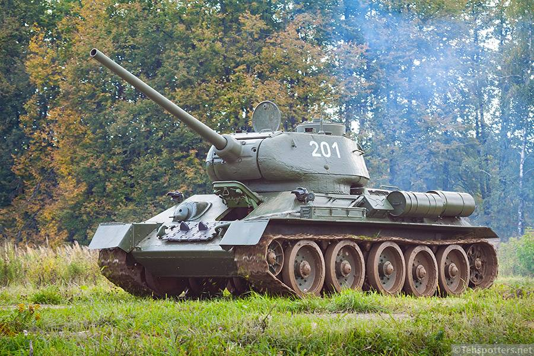
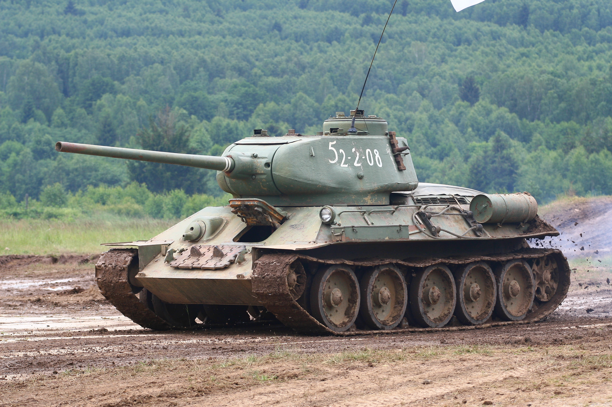
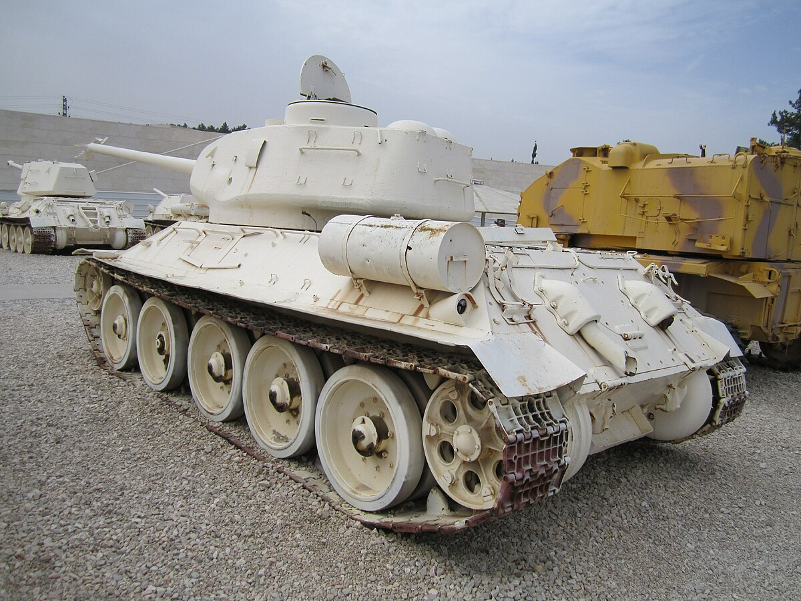

Ми-35М — это глубоко модернизированный наследник легендарного «Крокодила» Ми-24, представляющий собой уникальный гибрид ударного вертолета и десантного транспорта, способный выполнять роль «летающей БМП» в любое время суток. Под его «капотом» скрываются два мощных турбовальных двигателя ВК-2500, работающих в связке с современным Х-образным рулевым винтом и неубирающимся шасси, что значительно повысило высотность и выносливость машины при жестких посадках. Этот «летающий танк» вооружен до зубов: в носовой части установлена подвижная двухствольная 23-мм пушка ГШ-23Л, а на точках подвески размещаются противотанковые ракеты «Атака», блоки неуправляемых ракет С-8 или С-13 и даже подвесные пушечные контейнеры, при этом внутри бронированного корпуса остается место для перевозки восьми полностью экипированных десантников.